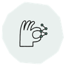
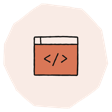
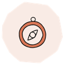
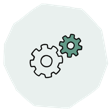
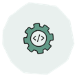

Agentic Quality & AI in testing
Redesigning QA processes around LLMs. I build automated workflows and internal tools on Claude Code, AWS Bedrock, Dust and MCP, and drive AI adoption across the team.
Staff SDET / QA Team Lead at Contentsquare · Barcelona
I'm Bogdan, a quality engineer with 16 years of experience, from radar and lidar systems in automotive to SaaS analytics at scale. Today I lead the move to Agentic Quality: test workflows built around LLMs that ship faster without lowering the bar.
in software quality, from hands-on test automation to test management and team leadership
engineers led as direct reports or mentored as a career coach
SaaS, MedTech and Automotive, each with very different quality bars
hands-on engineering in my lead role. I still write the frameworks.
01 · About
I started my career in 2010 testing radar and lidar systems at Continental, where a defect in a driver-assistance system was never "just a bug." That taught me rigor: traceability, high automation coverage, V-model discipline, and real ownership of a release.
Since then I have brought that rigor to faster environments. At ERNI I ran test management for MedTech and automotive clients. At Onna I led a squad on a SaaS eDiscovery platform. At Contentsquare I grew to Staff SDET / QA Team Lead, reshaping how quality works across engineering.
Along the way I have worked at every company size: a global corporation, a consultancy, an early-stage startup and a fast-growing scaleup. I know how quality has to adapt to each one.
My focus now is Agentic Quality: redesigning the quality process around LLMs and AI agents so the team spends its time on judgment, not repetition.
Quality as a cross-team enabler across engineering, not a final checkpoint before release.
Frameworks and agents handle repetition so people can focus on risk, edge cases and exploration.
Regular one-to-ones, clear goals and development plans. Strong teams outlast any tool.
02 · Expertise
Redesigning QA processes around LLMs. I build automated workflows and internal tools on Claude Code, AWS Bedrock, Dust and MCP, and drive AI adoption across the team.
Scalable test frameworks for web, API and mobile, built for maintainability so failures are clear and fixes are fast.
Fast, reliable pipelines with quality checks in every step, running on containerized and Kubernetes-native infrastructure.
Leading QA teams of up to 6 and shaping quality strategy with engineering leadership. At Contentsquare I drove two major transformations: from Quality Assistance to a highly automated release process owned by dev teams, then to Agentic Quality.
03 · Experience
10 roles across 4 companies. Expand a role to see the details.
80% SDET20% Lead
80% SDET20% Lead
70% SDET30% Lead
04 · Stack
05 · Certifications & learning
BCS · ISTQB
Oct 2015
Anthropic
6 courses · 2026

Introduction to Claude CoworkAug 2026
Claude Code 101Jul 2026
AI Fluency: Framework & FoundationsJul 2026
Introduction to Agent SkillsMar 2026
Claude Code in ActionMar 2026LinkedIn Learning
17 courses · 2020 – 2026
Google × Udacity
2017 – 2018
06 · What colleagues say
"Clear minded, organized and outstanding communicator, he not only prepared the testing framework…"
"Bogdan was the Test Manager in the project and he acted like one, taking care of the testing environment…"
07 · Open source
Get in touch
I'm happy to talk about Staff/Principal SDET, Quality Engineering leadership and AI-in-testing roles, or just to swap notes on agentic testing.